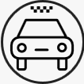

Оставляете заявку на подключение к Яндекс.Такси на сайте либо
звоните по указанному номеру. Получив Ваши данные мы регистрируем
Вас в сервисе.
УСТАНОВКА ПРОГРАММЫ
После подключения отправляем Вам ссылку на Таксометр Яндекс.Такси
ФОТОКОНТРОЛЬ
Открыв Таксометр выбираете таксопарк Маквин, производите съемку
автомобиля и в/у.

НАЧАЛО РАБОТЫ
Успешно проходите фотоконтроль, выходите на линию и получаете свой
первый заказ.
Заявка на работу водителем в Яндекс.Такси
Оставьте заявку, мы перезвоним и проконсультируем Вас по дальнейшим
действиям
Нажимая на кнопку, вы даете согласие на обработку персональных
данных.
Для работы
Водительское удостоверение с категорией "В", со стажем 3 и более
лет
Вам
Четыреxдверный автомобиль не старше 2003-го года (какие авто
подxодят к тарифу "грузовой" смотрите ниже раздел вопросов)
Необходимы
Вам понадобится смартфон с операционной системой Android 5.0,
камерой, GPS-модулем и 2 ГБ оперативной памяти.
Почему выгодно с нами работать?
РАБОТА В УДОБНОЕ ВРЕМЯ
СВОБОДНЫЙ ГРАФИК
БЫСТРОЕ ПОДКЛЮЧЕНИЕ
ЗАКАЗЫ КРУГЛОСУТОЧНО
МИНИМУМ ПРОСТОЯ
ВЫПЛАТЫ ДВАЖДЫ В СУТКИ
ПРИЕМ БОЛЬШИНСТВА АВТО
Часто задаваемые вопросы
Для подключения к Яндекс.Такси подойдут большинство пятидверных
автомобилей в хорошем состоянии, стоимостью от 150 000 рублей.
Диспетчер даст знать, если авто нельзя зарегистрировать.
Минимальные требования, необходимые для работы таксометра
Яндекс.Такси: Android 5 или более поздняя версия операционной системы,
камера, GPS-модуль и выход в интернет (приложение Таксометр требует
около 2-5 Гб в месяц). Камера нужна для прохождения Фотоконтроля, а
GPS — это модуль, который принимает сигналы с навигационных спутников.
Благодаря этому Яндекс.Такси понимает, где находится водитель,
соотносит эти данные с местоположением пассажира и учитывает при
распределении заказа. Важно: режим экономии энергии не используйте —
иначе передача сигнала GPS ухудшится, и вы можете потерять часть
заработка.
Да, подойдет, подойдет и 2007 года, и ВАЗ 2114 тоже подойдет.
Да, возможно, мы стараемся делать условия максимально комфортными
Оплата сайта может быть произведена как при личной встрече так и через
банковский перевод на карту ПриватБанка. Альтернативные способы оплаты
необходимо обговорить с разработчиком.
Да, Вы не привязаны только к одному таксопарку, можете подключиться к
другим и выбирать между ними.
Да, могут. Половая принадлежность не имеет значения для работы в
Яндекс.Такси
Да
После того, как Вас зарегистрировали в таксопарке, пройдите
фотоконтроль. Запрос на процедуру приходит автоматически, согласитесь
на прохождение со своего устройства. Закончив процедуру включите
статус «На линии». Первые заказы начнут поступать в течение 10 минут.
Просто оставьте заявку или позвоните нам. Регистрация займет не более
15 минут.